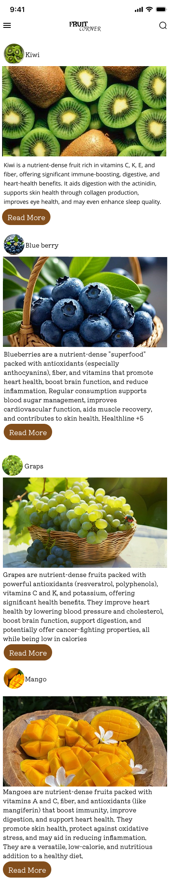
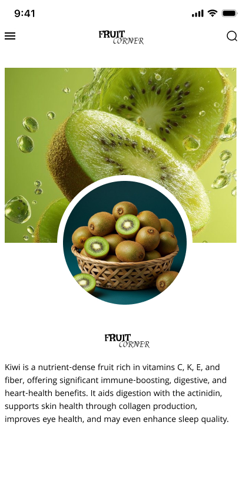
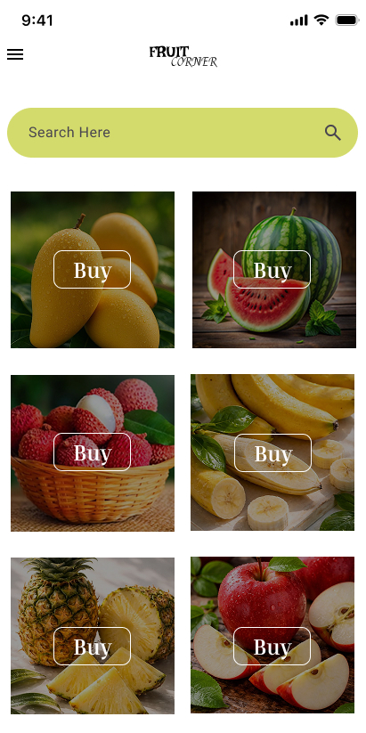
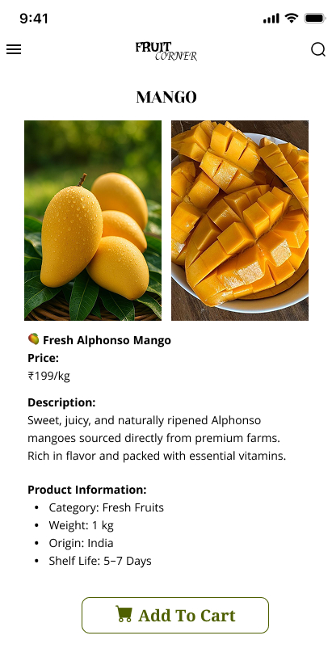
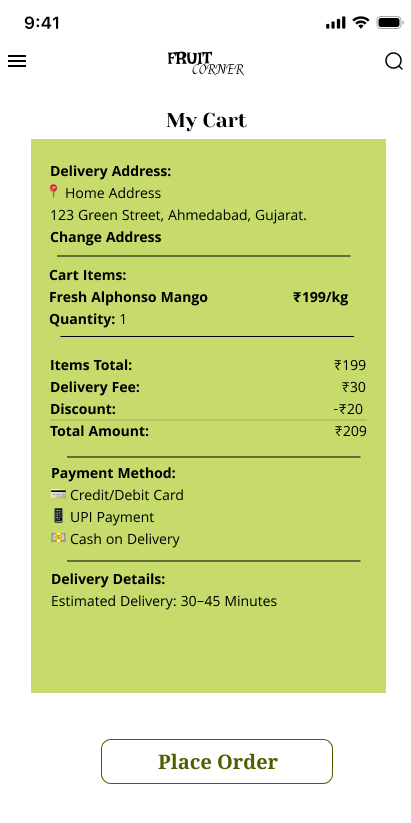

Fruit Corner Mobile App Design
Project Overview
Fruit Corner is a modern fruit shopping mobile application designed in Figma. The app allows users to browse fresh fruits, view product details, add items to cart, and place orders through a clean and user-friendly experience.
Role
UI/UX Designer
Tools Used
Figma
Project Goal
To create an engaging and intuitive fruit shopping experience that helps users easily discover and purchase fresh fruits online.
App Designs






Prototype Video
Key Features
- Clean and intuitive user interface
- Easy product browsing and filtering
- Detailed product information pages
- Smooth shopping cart experience
- User profile and order history
- Responsive mobile design
- Fast checkout process
Outcome
The final design provides a simple, colorful, and user-friendly fruit shopping experience with smooth navigation and modern visual design. Users can easily browse products, compare options, and complete their purchase seamlessly.
Design Highlights
- Modern color palette with fresh, vibrant colors
- Intuitive navigation structure
- High-quality product imagery
- Touch-friendly interface elements
- Consistent typography and spacing
- Clear call-to-action buttons